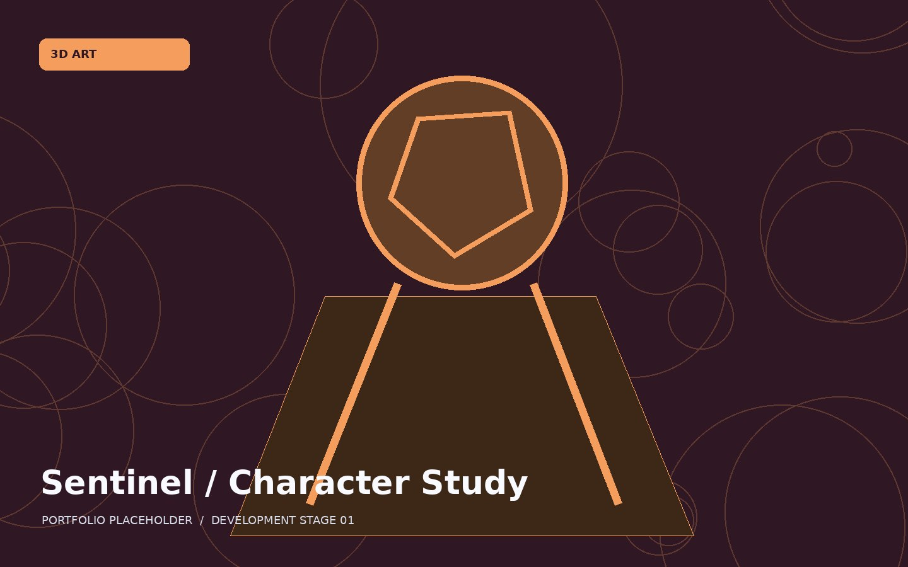

STAGE 01
Research & references
Collect visual references, audience research and comparable game examples. Explain which findings informed the direction.
3D ART / CASE STUDY 02
A game-ready science-fantasy character from blockout to presentation

3D character artist
Maya · ZBrush · Substance Painter
Players of stylised action and adventure games
Concept and objectives. Develop a distinctive game-ready character with clean topology, readable silhouette and coherent material definition.
My contribution. I planned, developed, tested and presented the work in the role of 3d character artist. Replace this placeholder with accurate project responsibilities and specific examples of your individual contributions.
Creative and technical challenges. Maintaining silhouette detail while preparing a lightweight game mesh. This project page is a demonstration case study. Replace all sample text and images with your genuine evidence.
Use the left and right arrows, thumbnails, or keyboard arrows while the gallery has focus. Captions explain each production stage.

Reference board and silhouette explorations
1 / 5Sample visuals are original placeholders, not evidence of a completed student project.
Collect visual references, audience research and comparable game examples. Explain which findings informed the direction.
Include annotated sketches, storyboards, visual studies, gameplay flowcharts or a production plan.
Show the key production tasks, tools, methods and decisions behind the work.
Compare early tests against revised versions and identify why those changes were made.
Challenge: Maintaining silhouette detail while preparing a lightweight game mesh. Solution: Compared sculpt iterations in-engine and baked fine detail onto a practical low-poly version.
Record how you tested the work, what others observed and how you responded.
Summarise the finished outcome, evidence of success and what you would improve next.
Add your YouTube video ID in the VIDEO_ID setting at the end of this page.
Replace this description with a short introduction to your game, 3D walkthrough, gameplay features or production process.